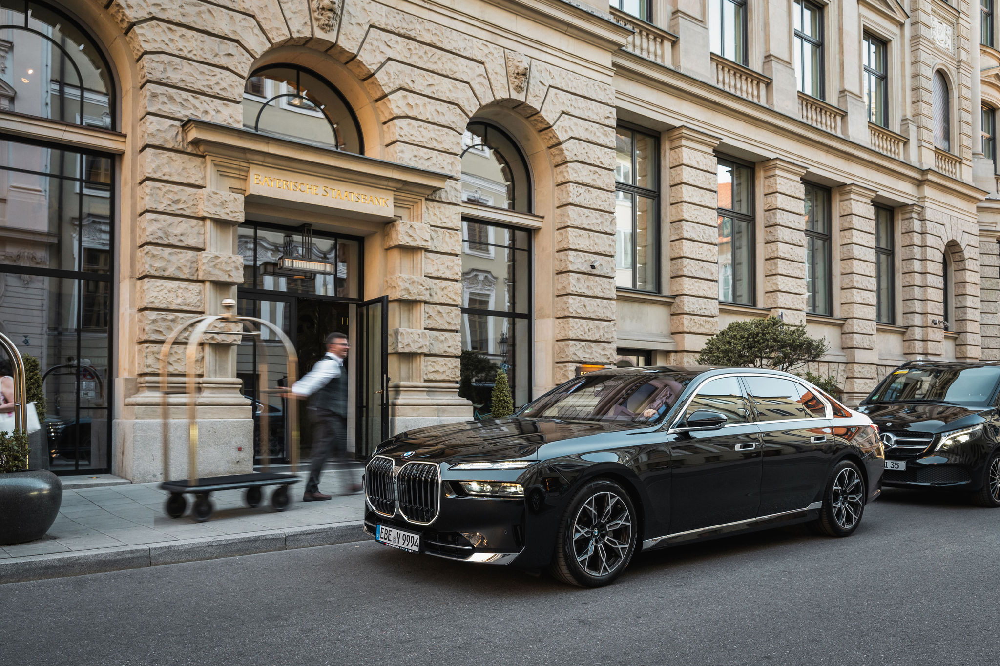

Chauffeur Service Munich for Businesses
From MUC Airport and the Messe München to the city’s corporate headquarters. A driver who knows the way.
A business hub with tight schedules
Munich is one of Germany’s strongest economic centres. Corporate headquarters such as BMW, Siemens and Allianz are based here, alongside one of the largest exhibition venues in Europe. For businesses this means tight schedules, changing appointments and guests who need to arrive on time. That is exactly what we are here for.
What sets our chauffeur service in Munich apart
Munich Airport (MUC)
The airport lies around 40 kilometres north-east of the city centre. Depending on traffic, the journey takes 35 to 50 minutes. We track flight status in real time and adjust the pick-up time if there are delays.
Messe München
The grounds in Riem host leading trade fairs such as bauma, ISPO and IAA Mobility. During trade fair weeks we increase our fleet capacity so that every request can be served.
Corporate headquarters
BMW Welt, the Siemens Campus and the Allianz Arena are all a short drive from the centre. Many of our corporate clients book regular journeys between these locations and the city centre.
City centre and addresses
Bayerischer Hof, Vier Jahreszeiten Kempinski and the Charles Hotel are among the establishments where we regularly collect guests. Our chauffeurs know the driveways and procedures of each one.
What our clients in Munich rely on
Local knowledge
Our drivers know the roadworks, closures and congestion times in Munich and choose the route accordingly.
Flight monitoring
Arrival times at MUC are tracked live, which eliminates waiting time at the terminal.
Discretion
For board members and guests who wish to work or make calls undisturbed during the journey.
Corporate billing
One invoice per month instead of individual receipts per trip, convenient for accounting and office management.
The right class for every appointment
For board-level journeys we recommend the First Class with an S-Class or Audi A8. For groups and trade fair teams, the V-Class with six seats is available.
View all vehicle classesFrequently asked questions about our chauffeur service in Munich
Between 35 and 50 minutes depending on traffic. During peak times, a little more time should be allowed.
Yes, particularly during major trade fairs such as bauma or ISPO we coordinate shuttle journeys between hotels and the exhibition grounds in Riem.
Short-notice bookings are usually possible within a few hours, depending on fleet availability.
Yes, we regularly drive to destinations in the surrounding area as well as to other major German cities.
Book a chauffeur service in Munich.
Tell us about your appointment and we will provide the right driver and the right vehicle.